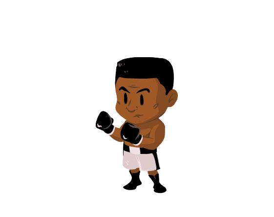

Muhammad Ali
The greatest boxer in history.

Muhammad Ali the greatest of all time
Some facts about Muhammad Ali (Clay)
- Muhammad Ali, original name Cassius Marcellus Clay, Jr., (born January 17, 1942, Louisville, Kentucky, U.S.—died June 3, 2016, Scottsdale, Arizona), American professional boxer and social activist.
- Ali was the first fighter to win the world heavyweight championship on three separate occasions; he successfully defended this title 19 times.
- When Clay was 12 years old, he took up boxing under the tutelage of Louisville policeman Joe Martin. After advancing through the amateur ranks, he won a gold medal in the 175-pound division at the 1960 Olympic Games in Rome and began a professional career under the guidance of the Louisville Sponsoring Group, a syndicate composed of 11 wealthy white men.
- On February 25, 1964, Clay challenged Sonny Liston for the heavyweight championship of the world. Liston was widely regarded as the most intimidating, powerful fighter of his era. Clay was a decided underdog. But in one of the most stunning upsets in sports history, Liston retired to his corner after six rounds, and Clay became the new champion.
- Clay shocked the boxing establishment by announcing that he had accepted the teachings of the Nation of Islam. On March 6, 1964, he took the name Muhammad Ali, which was given to him by his spiritual mentor, Elijah Muhammad.
- Ali was stripped of his championship and precluded from fighting by every state athletic commission in the United States for three and a half years. In addition, he was criminally indicted and, on June 20, 1967, convicted of refusing induction into the U.S. armed forces and sentenced to five years in prison. Although he remained free on bail, four years passed before his conviction was unanimously overturned by the U.S. Supreme Court on a narrow procedural ground.
- In 1996 Ali was chosen to light the Olympic flame at the start of the Games of the XXVI Olympiad in Atlanta, Georgia. The outpouring of goodwill that accompanied his appearance confirmed his status as one of the most-beloved athletes in the world.
We would like you to spend some more time to read more about this person at
Wikipedia entryGet in Touch
If you love coding and development as much as me feel free to contact or ask for advice. We can have fun while coding that way!
CONTACT ME